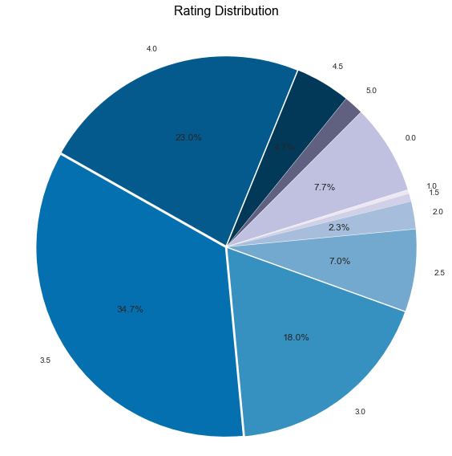

After collecting reviews and finding out valid data points next step was to study the data. We made a pie chart for understanding the distribution of yelp ratings for our restaurants. This helped us set our expectations for further research.
As we can see in the pie-chart inspite of having all closed restaurants, majority of restaurants had rating of 3.5-4.0 We were quite surprised to see such a decent yelp ratings for sample data. We did not stop there and moved ahead to do some further analysis using Vader Sentiment library of Python to capture sentiment of reviews.